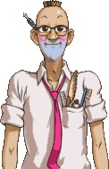

Refranero popular
 De: La Frikipedia, la enciclopedia extremadamente seria.
De: La Frikipedia, la enciclopedia extremadamente seria.

|
Este artículo necesita ser ilustrado. Busca una afoto en nuestro depósito de imágenes o donde sea y ponla, pero que no sea pr0n, que se cabrea el señor del adSense y nos corta el grifo de los dólare. Y sin dólare no hay servidor...
|
El Refranero popular, también conocido como Refranero español, es un compendio de sabiduría a modo de frases cortas que los españoles están muy orgullosos de compartir y seguir creando. Las enseñanzas de este compendio son aplicables a todos los aspectos de la vida ya que es amplísimo y día a día crece un poco más para hacer frente a los nuevas incógnitas que se plantean en esta sociedad.
 Ejemplo de refranero NO muy ortodoxo
El Refranero popular está intimamente ligado a los bares mediterraneos, al jamón, las tapas, la cerveza y los partidos de fútbol.
Normalmente las enseñanzas que contiene el Refranero se ven contradichas con lo que la sociedad muestra como comportamiento normal y esta situación se ve más acusada cada día. Sobre todo desde la aparición del movimiento Gafapastista.
Nacimiento
El Refranero popular nació en la antigua Gades durante la dominación de los fumacios cuando un tal Fran se encontró una moneda de una peheta mientras iba a la oficina y dijó entonces: "A quien madruga: Dios le ayuda". Al llegar a la oficina no paró de repetir el suceso a todos sus compañeros a los que, aunque vieron que era verdad lo que dijo Fran, les empezaba a tocar los cojones que se repitiera más que un gazpacho cargadito. Sentenciaron que Fran se refranaba con cada refrán que soltaba. Decidieron ajusticiarlo por pesado y justo antes de morir produjo el segundo y el tercer refran: "Jodido pero contento" y "Cría cuervos y te sacarán los ojos"; inaugurando lo que hoy día es una síntesis de saber incunable.

Decir popular y español suele relacionarse con esto
Desarrollo
Hubo quien vió que era bueno y prudente contener todo aquello que Fran dijo para recordarlo y evitar que se cometieran los mismos errores una y otra vez. Un parroquiano de un bar local empezó a recordar las enseñanzas Fran cuando estas eran oportunas y pronto comenzó a crear otras nuevas y a debatir su utilidad con el resto de parroquianos dando al hombre una herramienta útil como código de conducta. Algunos de los mejores refranes de entonces fueron:
- Te casaste, la cagaste.
- Siendo agujero hasta de caballero
- A Dios rogando y con el mazo dando.
- Que hago aqui jugando a las petancas, si tengo esta cacho de tranca.
- Quien con niños se acuesta, meado amanece. (en relación a cierto episodio de un cantante de folk)
- Zorra que duerme de día, de noche anduvo de cacería.
- Zurrianme las orejas, reniego de putas viejas.
- Al comer y al cagar, prisa no te has de dar.
- La tortuga corre si usted la deja.
- Cuando apunte la hoja siembra la panoja.
- A quien no se lo merece, la virgen se le aparece.
- Donde tengas la olla, no metas la polla.
- De los gustos sin pecar, el mejor es el cagar.
- Con buena polla bien se folla.
- A capar se aprende cortando cojones.
- Más caga un buey que cien golondrinas.
- Ata más un pelo de coño que una maroma de barco.
- O follamos todos o la puta al río.
- Así come el mulo, así caga el culo.
- A nadie le huelen sus propios pedos ni le parecen sus chiquillos feos.
- No hay himen duro, sino gaita fofa.
- Para lo que me queda en el convento me cago dentro.
- Aprendiz de muchas ciencias, maestro de mierda.
- Sábado, sabadete, camisa limpia y polvete.
- De barriga gigante, pedo retumbante.
- Del que tiene dineros suenan bien hasta los pedos.
- Juan Palomo: Yo me lo guiso, yo me lo como.
- ¿Enseñar sin saber? Como no sea el culo, no sé qué.
- Con dos pedos y una bufa, la cama como una estufa.
- Donde hay pelo hay alegría.
- A la mejor puta se le escapa un pedo.
- El primero que lo huele debajo del culo lo tiene.
- Agujero con pelo, pa jodelo.
- Caga el Rey, caga el Papa, cagar nadie se escapa.
- No hay coño mas sano que la palma de la mano.
- Vieja, pero no de la almeja.
- Cuando la gana de joder aprieta, ni el culo de los muertos se respeta.
- Teta que cubre la mano, no es teta, es grano
- Teta que mano no cubre no es teta, sino ubre
- La mujer limpia y fina, que ya se volverá gorda y cochina.
- Cuando seas padre, comerás huevos.
- Cortando cojones se aprende a capar.
- Ninguna mujer es fea por donde mea.
- Lo que se ha de comer los gusanos que lo disfruten los cristianos.
- El muerto al hoyo y el vivo al bollo.
- Aunque la mona se vista de seda, mona es y mona se queda.
- Tiran más dos tetas que dos carretas.
- Frisoles con coles, pedos a montones.
- Fuma, jode y bebe, que la vida es breve.
- Tirado el pedo, buena gana es apretar el culo.
- Mátate estudiando y serás un cadáver culto.
- A enemigo que huye, puente de plata.
- Teta i sopa, no caben en la boca.
- Muere joven, para que tu cadaver sea guapo.
- Un hombre sin religion es como un pez sin bicicleta.
- Donde no hay mata, no hay patata.
- Dime con quien andas, y te dire que cura es tu padre.
- A quien madruga, dios le ayuda, uno que madrugo una cartera encontro, pero mas madrugo el que la perdio.
- El que por su gusto es buey, hasta la yunta lame.
- En casa del herrero, azadón de palo.
- Maestro ciruela: no sabe leer pero ya puso escuela.
- Agua que no has de beber, dejala correr.
- Marieta, no seas coqueta/ que los hombres son muy malos/ prometen muchos regalos / y lo que te dan son puro palo.
- No era la burra arisca, los palos la hicieron.
- Nunca duerme el diablo.
- No por mucho madrugar, patada en los cojones.
- Refrán verdadero, el que come morcilla, caga moreno.
- ``Si Pujas Y pujas Y no Puedes Cagar Deja De Hacerte Pendejo Y Ponte A Trabajar
(en proceso de ampliación)
Esta práctica tuvo un efecto inmediato en la sociedad y la mejoró mediante las enseñanzas que los bares daban gratis junto con una caña.
Actualidad
Hoy en día los refranes han ido adaptándose a los tiempos modernos para reflejar más fielmente la realidad de la sociedad actual. Tanto es así, que hasta la primeras enseñanzas han sufrido modificaciones. De todas formas, hay algunos puristas que consideran una herejía cambiar la sabiduría popular para que se adapte a los tiempos, en vez de difundir la sabiduria tal como es para que la sociedad actue de manera correcta. La mayoría de los encuestados afirma que los "nuevos" refranes son útiles y eficaces. Estos son algunos ejemplos:
- Cuando detras tuya hay un toro... CORRE Corre!
- Si el agua jode los caminos, imagina los intestinos
- A quien madruga, viene Dios y le da con un mazo
- Cría cuervos y tendrás un montón de ellos
- Quien a buen árbol se arrima, se lleva una patada en la boca
- Más vale pájaro en mano, que una patada en los cojones
- Ojo por ojo, ojo al cuadrado
- Más vale pequeño volátil en cavidad metacarpiana que un ciento de sus congéneres con las alas extendidas surcando los espacios etéreos
- Es más acequible tener un pequeño ser avícola volátil, cuyas extremidades inferiores se encuentren posadas sobre nuestra cavidad metacarpiana, que congéneres suyos agrupados en números centenares, con las alas extendidas haciendo movimientos estratégicos con la finalidad de mantenerse en aire, surcando las bóvedas etéreas sobre nosotros
- Con paciencia y con saliva... se la metió el elefante a la hormiga
- Con este tiempo tan loco a cualquiera se le cae el moco
- A caballo regalado, quítale el envoltorio
- Juan Palomez: Yo me lo guiso, tú te lo comes
- A palabras necias, bofetones
- La lluvia en Sevilla es una puta mierda
- Dime con quien andas y si está buena me la mandas
- Ante la duda, la más tetuda
- Cuando las barbas de tu vecino veas cortar, tu vecino se estará afeitando
- Casa con dos puertas, especulación urbanística al canto
- Quien le da pan a perro ajeno, se gana un amigo perruno
- Haz el bien y mírale las tetas a quien
- Si la vida te da la espalda,tocale el culo
- En boca cerrada no entran moscas, pero pollas como roscas
- A buenas horas, mangas teles
- A la cama no te irás sin hacerte una paja más
- La perra del hortelano, ni come ni se la deja comer al amo.
- El que esté libre de pecado, que tire de la cadena
- Ande yo cachondo y ríase la gente
- El que fue a Sevilla se jode y paga un taxi
- El que roba a un ladrón, a 100 euros la mamada
- La avaricia rompe el hosting
- Vive de tus padres, hasta que puedas vivir de tu novia
- A falta de pan, bocadillo de nada
- Ojos que no ven, quiosco de la ONCE
- Ojos que no ven, mierda que pisas
- Ojos que no ven, tortazo que te pegas
- Ojos que no ven, semáforo que te saltas
- Quien rie el último, rie más tarde
- Quien rie el último, piensa más lento
- Quien rie el último, rie solo
- Aquí o follamos todos o tiramos a tu novia al río
- El hábito no hace al monje, sino a la monja
- Mal de muchos, pandemia
- Más vale pájaro en mano que mear sentado
- Quien madruga duerme menos
- Al que madruga, no amanece más temprano
- El que madruga... encuentra todo cerrado
- Camaron que se duerme, tenía sueño
- Perro ladrador no está mudo
- En Albacete caga y vete
- Cría cuervos y tendrás cuervitos
- Quíen a buen árbol se arrima nadie le ve cuando mea
- Más vale teta en mano que ladillas en el ano
- Cría cuervos y se te fumarán los porros
- El que ríe el último es que no ha entendido el chiste
- En casa del herrero bien cerrada no entran moscas
- Perro ladrador, no deja dormir
- Mea contento pero mea dentro
- Tanto va el cántaro a la fuente que se sacó un bonobús
- Más vale pájaro en mano que una vieja apoyada en una baranda
- Las granadinas, putas y finas
- Cuando el río suena... es que se ahogó una orquesta
- Salamanca, la que no es puta es manca
- En Adra, la que no es puta, ladra
- En Andújar, la que no es puta es bruja
- Cuando el disco de tu vecino veas formatear, pon el tuyo a escanear
- Teta que mano no cubre, alegría del que toca
- Salud y euros, que lo demás son puñetas
- Quién a buen árbol se arrima, buen rayo le cae encima
- Cuando seas padre, colesterol altísimo
- Más vale pájaro en mano que padre a los dieciocho
- No por mucho madrudar amaneces más trempado
- Mas vale ciento volando, que raton en el ano
- Cuando el río suena ... es que un músico se está ahogando.
- O follamos todos o se mata la puta.
- Más vale pájaro en mano que chuleta en paracaídas.
- Más vale un polvo al año que cien pajas en el cuarto baño.
- Más vale pájaro en mano, que un mojón en la nevera.
- Se cree la gente que todo el monte es origami.
- A quien buen árbol se arrima, va un perro y se le orina.
- Cague duro, cague liso... Pero no cague en el piso.
- A enemigo que huye, puente de carcoma.
- No por mucho madrugar se amanece masturbado.
- Perro mordedor, no le mires el diente.
- Año de nieves, no te quites el sayo.
- Quien a buen árbol se arrima, viene un perro y se le orina.
- No por mucho amanecer, yo madrugo mas temprano.
- Murcia, donde la que no es puta es furcia.
- De la primera puta y el primer gitano, nació el primer murciano.
- Albacete, donde el que más larga la tiene más la mete.
- Magdalena y café con dos terrones, mousse con tropezones.
- Café y tostadas, paladín a la taza.
- Galletas y zumo de piña, cucurucho para el niño y la niña.
- Cortado descafeinado y bocadillo de pavo, lionesa en el lavabo.
- Purito y mate, atasco en el váter.
- Pan con nocilla, enanito de arcilla.
- Pan con tomate, escobilla al rescate.
- Café y pollo, regalito al hoyo.
- Si estás sin blanca, vive de tu tranca.
- A quien madruga, buenas son tortas.
- A falta de pan, amanece más temprano.
- No por mucho madrugar, Dios le ayuda.
(en proceso de ampliación)
El futuro
Poco se puede adelantar de lo que vendrá en el mundillo de los refranes, porque aún no ha sucedido, pero cabe destacar las investigaciónes que se están haciendo en esta materia y que con cada vez más frecuencia están siendo publicadas en revistas del más alto nivel científico como "Refrans of the world", "Refranial Geografic" o "Muy interesante". Según estos estudios, llevados a cabo en su mayoría por el doctor Paquillo de la universidad de Kentuky (si, la de los pollos) parece cada vez más evidente que cualquier refrán mantiene su sentido si se sustituye la última parte del mismo por "patada en los cojones", y para muestra una patada en los cojones:
- A quien madruga patada en los cojones
- Si tienes examen de P.Cebrián patada en los cojones
- Quien a buen arbol se arrima patada en los cojones
- Lo que natura no da patada en los cojones
- El que ríe el último, patada en los cojones
- A caballo regalado patada en los cojones
- Mas vale pajaro en mano que patada en los cojones
- Ojos que no ven, patada en los cojones
- A agricultor tonto, patada en los cojones
- Perro ladrador, patada en los cojones
- No esta el horno para patada en los cojones
- Dime con quien andas y patada en los cojones
- Juan Palomo: yo me lo guiso y patada en los cojones
- A mal tiempo patada en los cojones
- Tiran mas dos tetas... que patada en los cojones
- Palos y piedras nada me harán, pero las palabras patada en los cojones
- Se cazan más moscas con miel que a patada en los cojones
- Más vale prevenir que patada en los cojones
- Ante la duda, patada en los cojones
- Perro ladrador, patada en los cojones
- Si el rio suena, patada en los cojones
- Al pan pan, y patada en los cojones
- La lluvia en Sevilla es patada en los cojones
- Lo que no te mata patada en los cojones
- Si no puedes con el enemigo patada en los cojones
- No hay mal que por patada en los cojones no venga
- El que se junta con un cojo, al año si no cojea, patada en los cojones.
- El muerto al hoyo y el vivo patada en los cojones.
- Mas vale gorda y hermosa que patada en los cojones.
- Mas ven cuatro ojos que patada en los cojones.
- De tal palo patada en los cojones.
- Por el humo se sabe donde esta patada en los cojones.
- A palabras necias, patada en los cojones.
- A perro flaco, patada en los cojones.
- Admirose un portugues/Al ver que en su tierna infancia/Todos los niños de francia/Le dieran una patada en los cojones
- En Abril, patada en los cojones.
- Hasta el 40 de Mayo, patada en los cojones.
- Quien roba a un ladrón, patada en los cojones.
- No por mucho madrugar patada en los cojones.
- El hombre y el oso, cuanto mas emo patada en los cojones.
- No vendas la piel del oso antes de patada en los cojones.
- Dios los cria y patada en los cojones.
- Agua que no has de beber patada en los cojones.
- El que siembra vientos cosecha patada en los cojones.
- La patada en los cojones mato al gato.
- El pez muere por patada en los cojones.
- Cuando las barbas de tu vecino veas pelar, dale unapatada en los cojones.
- Al niñato del metro de valencia patada en los cojones.
- A patada en los cojones, patada en los cojones.
- Al pan, pan y al vino, patada en los cojones.
- Hasta el 40 de Mayo, patada en los cojones.
- La memoria es como el mal amigo; cuando más falta te hace, patada en los cojones.
- Cada oveja con su patada en los cojones.
- Más vale patada en los cojones que ciento volando
- Barriga llena, patada en los cojones.
- Haz el bien y patada en los cojones.
- No te acostarás sin una patada en los cojones más.
- A enemigo que huye, patada en los cojones.
- Si una palabra no esta en la frikipedia, no existe, y a quien la diga, patada en los cojones.
- Vegiga llena patada en los cojones.
- Gente = patada en los cojones.
- El que tiene cáncer de/por cojones patada en los cojones.
- Camaron que se duerme patada en los cojones
- A Bill Puertas patada en los cojones.
- A IP anónima patada en los cojones.
- Camarón que se duerme, se los chiflean los sapos.
Todos están aquí.
El significado de los refranes
A continuación, desencriptamos algunos refranes populares:
- Más vale curar que prevenir: A ver, si se hace lo contrario... ¿De qué viven los médicos?
- Más vale cien pájaros volando que uno en mano: A ver, que si tienes uno encarcelado... ¿No será mejor tener cien liebres? A ver, que estamos en un país libre.
- El que avisa sí es traidor: Si tu avisas de que vas a traicionar... No por decirlo dejarás de ser traidor.
- Pan con pan, comida de listos: El pan es muy bueno para la salud. Y si, encima, tienes otro pan... ¡Eres un so listo por alimentarte de esto!
- A quién me droga, todos le apoyan: Dícese de la persona que a nadie le importa un pito lo que le pase.
- Perro labrador, poco chiguagua: O sea, que un negro no puede hacerse pasar por blanco ni aunque lo intente.
- En boca cerrada no entran moscas. En abierta, salen dientes: O sea, que cómo se te ocurra abrir el pico te matan.
- Cojos que no ven son también sordos: O sea, que si tienes una enfermedad y sufres síntomas diferentes, es que tienes otra enfermedad.
- El pez chico se come al gordo: Dícese del microordenador superfántastico que esta fulminando al gigaordenador gigante y superpesado. O sea, cuánto más pequeño, más arrasa.
- A todos los Martines les llega su San Cerdín: O sea, que si te llamas Martín, tu santo será San Cerdín.
- Juan Palomo: Yo me lo nifo, yo me lo tomo: O sea, que las drogas te las puedes nifar o tomar.
- A quien diosea, ayudo le madruga: Si juegas a ser dios un tal ayudo te hara madrugar llamandote a las 6 de la mañana a tu casa. Para que aprendas.
- Agua en la que te has de correr, no debes beber: Si yo me tuviera que correr en un vaso no beberia de ahi, eso se llama bukake.
- El que a buen arbol cobija, a la sombra se arrima: Si ayudas a un arbol te arrastrara al mundo de las sombras. Arboles no, quememoslos.
- Ojos que no sienten, corazon que no ve: Un refran gay.
- Ande yo este risueño que se caliente la gente: Riete de los demas si estan calientes. Señalales el paquete y riete.
- El saco rompe avaricias: Es un acronimo. Realmente quiere decir "El hombre del saco le rompe las piernas a los avariciosos"
Véase también
Autor(es):
- Krusher
- Nexo
- Er Makina
- Bill Gatos
- Pakolo
- Zeysoft
- Mu
- Hari Seldon
- Anxova
- Simoman
Frikipedia 2005-2016, Licencia
GFDL 1.2 - Extraído por FrikiLeaks